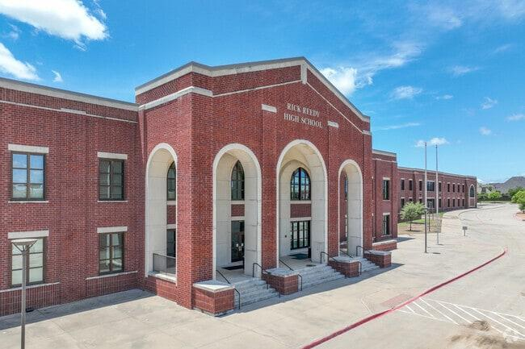
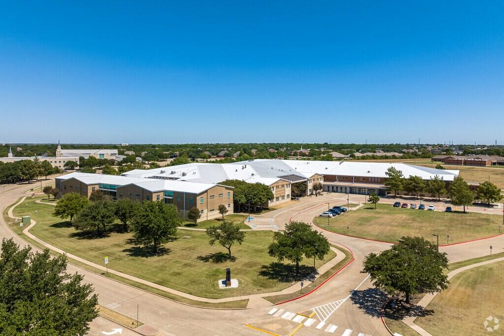

1. 주요 도시·지역과 국제학교
· 호치민 (Ho Chi Minh City)
사이공 사우스 인터내셔널(SSIS, 미국식·AP), 브리티시 인터내셔널 스쿨(BIS 호치민, 영국계·IB), ISHCMC(IB), 오스트레일리안 인터내셔널(AIS), 유러피언 인터내셔널(EIS), 캐나디안 인터내셔널(CIS) 등.
· 하노이 (Hanoi)
UNIS 하노이(IB), 브리티시 인터내셔널 스쿨 하노이(영국계), 하노이 국제학교(HIS), 콘코디아 하노이, 세인트폴 아메리칸 스쿨 등.
· 다낭·기타
다낭에도 국제학교가 있으며 주재원 자녀가 늘고 있습니다.

국제학교 캠퍼스 전경
2. 커리큘럼 — IB가 많지만 학교마다 다릅니다
· IB — UNIS, ISHCMC, BIS 등. PYP/MYP/DP 체계. 고등에서 IB Math AA/AI 선택, 내부평가(IA)·확장에세이(EE)·TOK가 점수의 큰 축.
· 미국식·AP — SSIS 등. 알지브라 → 지오메트리 → 알지브라 2 → 프리캘큘러스 → AP 미적분. GPA 누적.
· 영국계·IGCSE/A-Level — BIS 계열 일부.
3. G1~G12 학년별 준비 로드맵
영어 리딩·라이팅 기초와 수학 영어 용어. 한국어(모국어) 유지도 함께 챙겨야 귀국 후 적응이 수월합니다.
알지브라(Algebra)·지오메트리(Geometry) 시작. IB 학교는 MYP. 영어는 에세이 구조 훈련. 이 시기 수학 구멍은 고등에서 반드시 터집니다.
미국식은 GPA 누적 시작, IB는 DP 과목 선택 준비, 영국계는 IGCSE. 수학은 알지브라 2·프리캘큘러스, 과학은 물리·화학·생물 분화.
IB DP / AP / A-Level 본과정. IB 수학 IA·EE, AP 미적분, SAT/ACT, 대학 지원 에세이·인터뷰. 현지에서 도움을 받기 가장 어려운 시기이자, 가장 도움이 필요한 시기입니다.

국제학교 캠퍼스
4. 과목별 준비 방법 — 전 과목 관리
알지브라 1·2 · 지오메트리 · 프리캘큘러스 · 미적분(Calculus) · AP Calculus AB/BC · AP 통계 · IB Math AA/AI(HL·SL) · IGCSE/A-Level Maths. 영어 용어와 서술형 풀이를 함께 잡습니다.
리딩 · 에세이 라이팅·첨삭 · 문학 분석 · IB English A/B · 확장에세이(EE) · AP English · SAT/ACT · 대학 지원 에세이 · 면접(인터뷰).
물리·화학·생물 (IB/AP/IGCSE). 개념+영어 용어, 랩 리포트와 과학 IA 관리.
중국어·스페인어·베트남어. 한국어(IB Korean A)와 귀국 대비 한국 수학·국어 병행 관리가 특히 중요합니다.
5. 입학·편입 준비
· 입학시험 — 영어(리딩·라이팅), 수학 배치고사(알지브라·지오메트리 범위), 인터뷰, 이전 성적. 일부 학교는 MAP·CAT4를 사용합니다.
· 편입 — 인기 학교는 자리가 나야 합니다. 편입 시 수학 배치가 이후 IB/AP 과목까지 좌우하므로 미리 준비하세요.

국제학교 캠퍼스 전경
6. 베트남의 현실 — 학원이 없다면
솔직하게 말씀드립니다. 하노이·호치민에 한인 학원은 있지만 대부분 한국 교과(내신·수능) 중심입니다. IB·AP·IGCSE를 다루는 곳은 손에 꼽고, IB 수학 IA나 EE까지 관리 가능한 곳은 거의 없습니다. 현지 원어민 튜터는 영어로만 설명해 영어가 아직 편하지 않은 아이는 개념까지 놓칩니다.
그래서 베트남 주재원 가정에는 한국 선생님과의 1:1 화상 수업이 가장 현실적인 방법입니다. 시차 2시간이라 현지 방과 후가 한국 저녁과 맞고, 개념은 한국어로·용어는 영어로 잡으며, 아이 학교(SSIS의 AP인지 UNIS의 IB인지)에 맞춰 수업합니다.
7. 귀국 대비 — 최소 6개월 전부터
· 한국 학교 편입 — 국제학교에서 다루지 않은 한국 수학 교과의 빈틈을 메워야 합니다.
· 국내 국제학교 진학 — 채드윅 송도·NLCS 제주·SFS 등의 입학시험(수학 배치고사 + 영어 에세이 + 인터뷰) 준비.
귀국 두 달 전에 연락 주시는 경우가 많은데, 그때는 선택지가 이미 좁아져 있습니다.